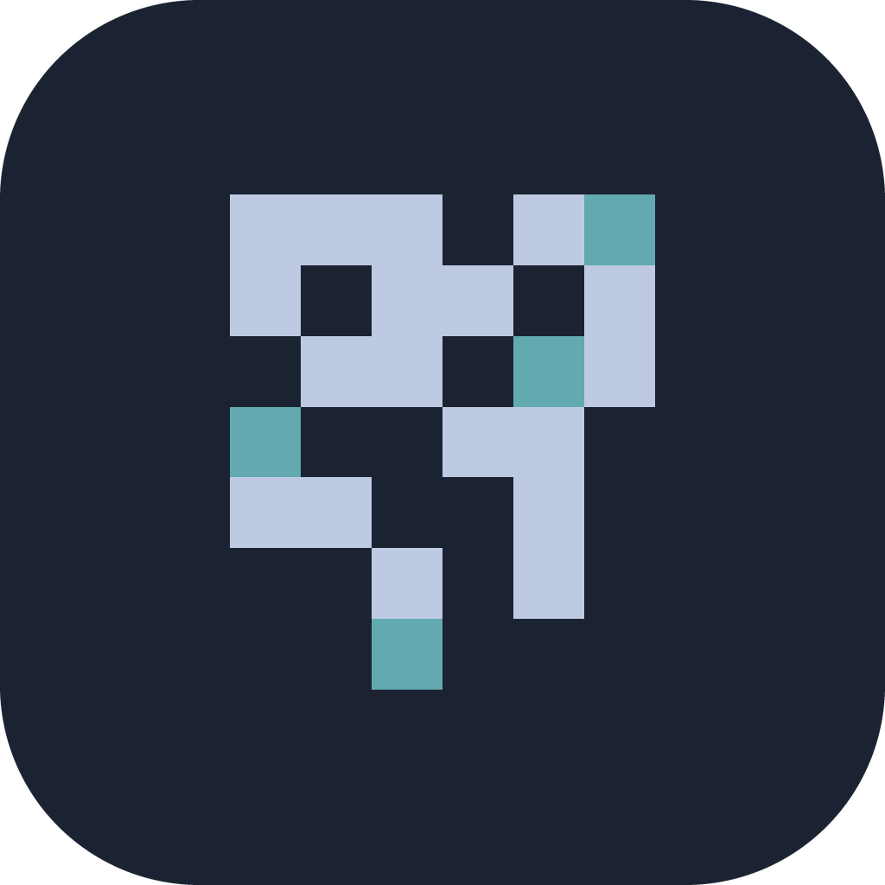

An open-source flashcard app for learning languages and other subjects in context. FSRS-6 schedules reviews, riar-manage regulates daily workload, and all history stays locally on your device.
Built so attention goes into learning, with almost no time spent managing queues, streaks, or accounts.
App